一到春季，各种流行病多发，为了预防春季流行病，特别是流行性感冒，我们可以煮一锅好喝又有效的护生汤。
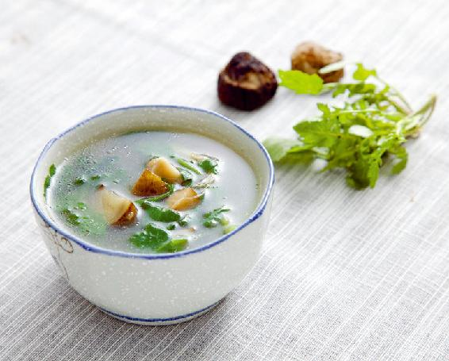
原料：鲜荠菜1把、萝卜缨1把、牛蒡半根、干香菇3个、植物油、盐、醋。
做法：
a 将香菇洗净泡发，切成小块。
b 在清水中放入少许醋，调成醋水。牛蒡带皮用面粉水洗净，切成滚刀块，泡在醋水中备用。
c 将新鲜荠菜（带根）切成2厘米小段。
d 锅里放入水，加少许植物油、盐，放入香菇、牛蒡煮开，再放萝卜缨煮20分钟。
e 放入荠菜煮1分钟，关火起锅。
立春时节，各种各样的病毒复苏，我们在冬天所受的风寒还残留在体内，吃的肥甘厚味又蓄积了内热。此时，不宜进补，宜吃春饼和春盘菜抗病毒。
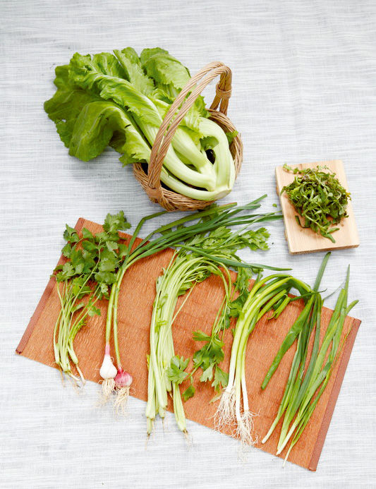
原料：芹菜、韭菜、香菜、荠菜、萝卜缨。
吃法：可以用以上原料卷饼，也可以直接凉拌（韭菜要焯过）。
雨水节气，谨记 “春捂秋冻”。我们可以多吃韭菜，它专门温暖我们的下半身，给人体肾系统增加阳气。
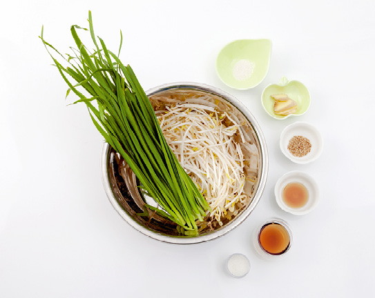
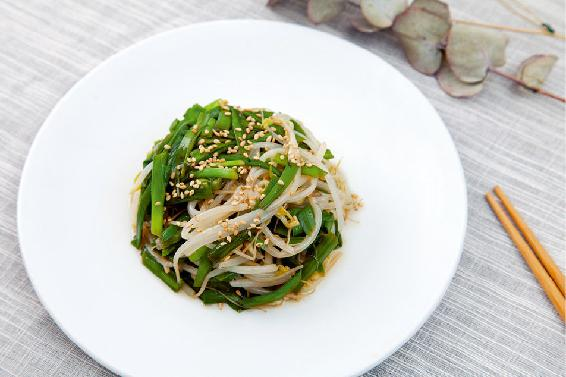
原料：嫩韭菜、绿豆芽、白芝麻。
调料：生姜、芝麻油、盐、糖、米醋。
做法：
a 白芝麻炒熟擀碎；生姜连皮切碎末，用少许盐、糖、米醋、芝麻油拌成调味汁。
b 韭菜、绿豆芽焯熟，倒入姜末和调味汁，拌匀即可。
惊蛰时节，病毒活跃。为了预防春季流行病，此时可以常喝黄豆萝卜汤，提高人体抵抗力。
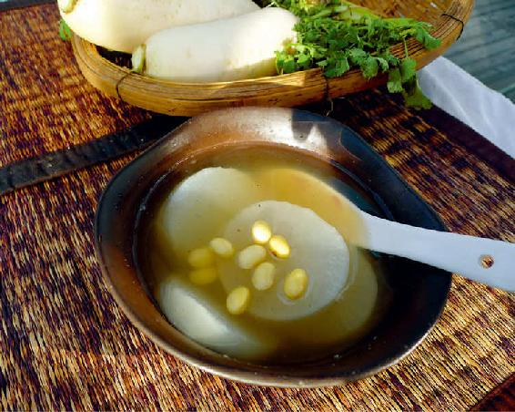
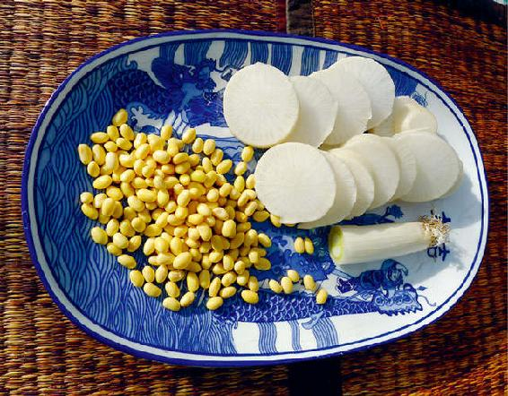
原料：生黄豆50克、白萝卜250克、葱白连须1根(大葱)或3根（小葱）、盐和胡椒粉各适量。
吃法：
a 黄豆泡2小时，大火煮开，小火煮30分钟。
b 用面粉水将白萝卜（带皮）和葱白（留根须）泡洗干净。
c 在锅里放入葱白和切成片的白萝卜，一起煮熟，加少量的盐、胡椒粉起锅。
春分节气，我们可以用疏肝理气的药食来舒发肝气。在诸多药食中，我推荐一款用三种香花搭配成花草茶给朋友们。
原料：月季花6朵、玫瑰花6朵、茉莉花12朵。
做法：将三种花用沸水冲泡即可。
清明时节生长的野菜，大多具有消炎抗菌、清肠排毒的功效，可以很好地帮助人们预防春天的流行病。
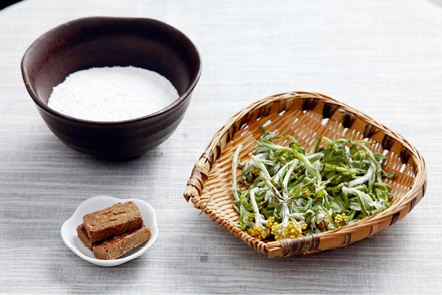
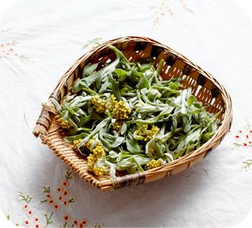
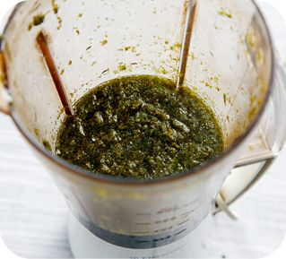
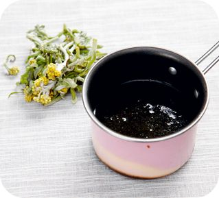
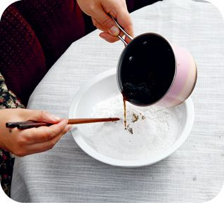
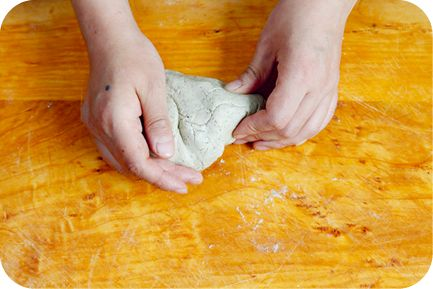
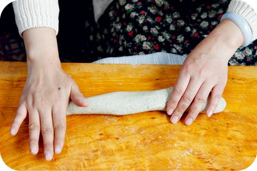
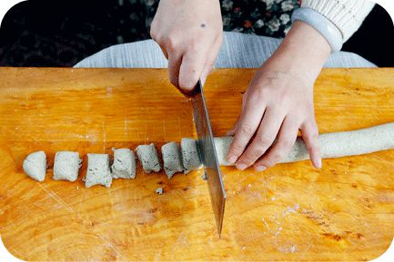
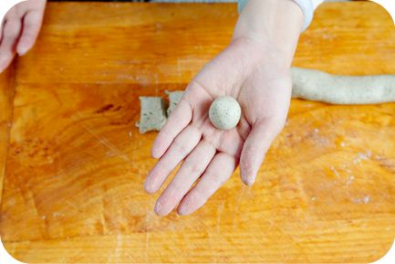
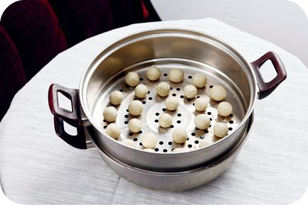
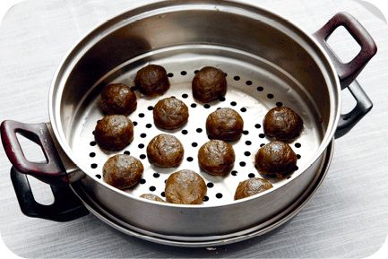
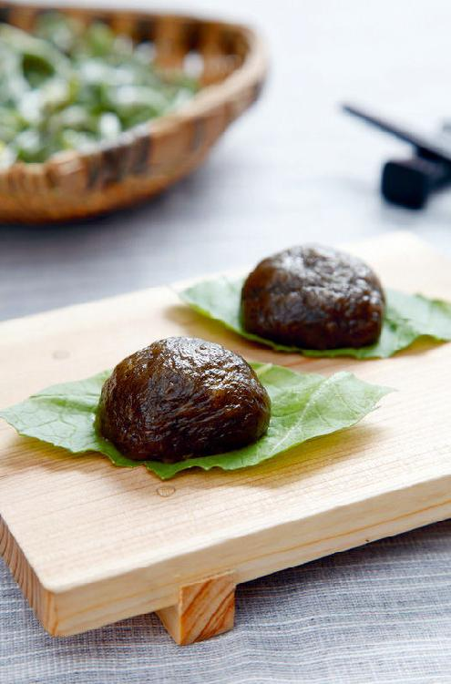
原料：田艾（清明菜）、糯米粉、红糖。
做法：
a 将新鲜田艾的嫩尖洗净，切碎，剁成茸。
b 水开后放入田艾，不要盖锅盖，大火煮30分钟，加入红糖化开，关火。
c 将田艾和水与糯米粉混合，用筷子搅拌，用手揉成团。
d 搓成长条，切段，揉成椭圆形，放笼屉里，用大火蒸20分钟。
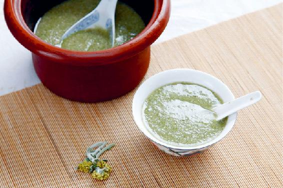
原料：田艾100克、糯米100克。
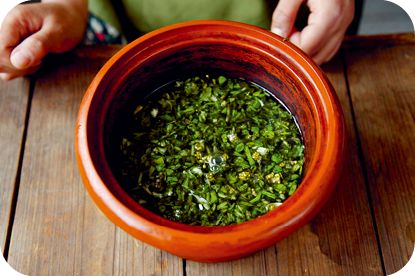
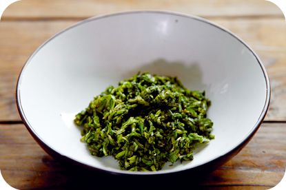
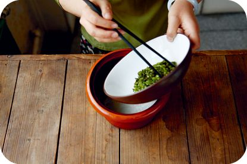
做法：
a 糯米用清水泡一夜。
b 把新鲜田艾的嫩尖洗净，切碎。
c 将糯米和田艾一起加水煮成粥，可以加少许糖调味。
原料：新鲜田艾250克（或干品50克）、冰糖。
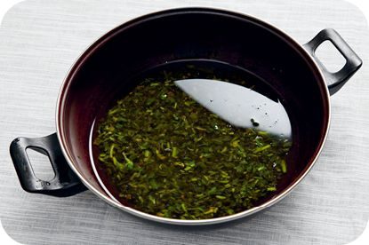
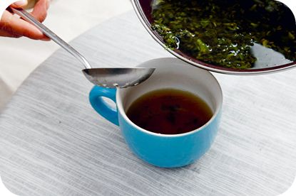
做法：
a 将田艾加水煮15分钟，滤出汤汁。
b 再次加水，放入冰糖后煮15分钟，滤出汤汁。
c 把两次的汤汁混在一起，一天之内分两次喝下。
谷雨时上市的新茶滋味清润，带有回甘。这是因为新茶中茶氨酸的含量更高。茶氨酸既能使人放松，缓解身心疲劳，又能提高注意力。
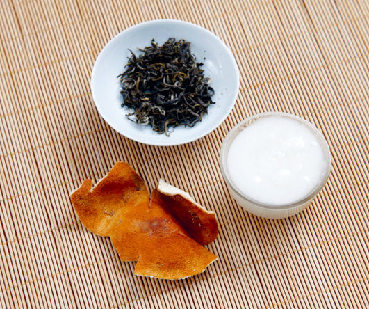
原料：绿茶、陈皮半个（或15克）、蜂蜜（油菜蜜最佳）。
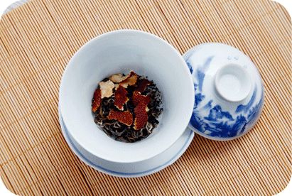
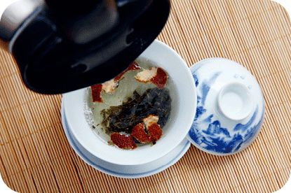
做法：陈皮切丝，与适量绿茶一起冲泡，晾温后加少量蜂蜜饮用。
允斌叮嘱：经期不宜饮茶。